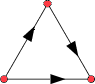
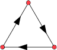
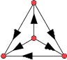
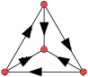
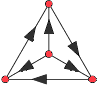
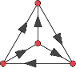

For example, consider the case if spinner A is labeled with 1 and 4, and spinner B is labeled with 2 and 3. If T = 1, you should choose spinner A first (and your probability of winning is 1/2 ). If T = 2, you should choose spinner B first (and your probability of winning is 1/2 ). If T = 3, you should choose spinner B first (and your probability of winning is 3/4 ). If T = 4, you should choose spinner A first (and your probability of winning is 7/8 ). Which spinner should you choose for larger T?
The spinners above yield the preference sequence ABBA.... Given a finite sequence of A's and B's, is there some way to label the spinners to give that preference sequence? What spinners use as few numbers as possible? What spinners make the sum of the numbers as small as possible? What spinners make the winning probabilities as large as possible? What if we allow A's, B's, and E's (for equal probabilities of winning either way)? What if there are 3 or more spinners?
2. We have several players, each with their own spinners equally divided into regions labeled with positive integers. For each pair of players, we know who is favored to spin the largest number. Can we design spinners with small numbers to meet these conditions?
For example, for the tournament , we want P(A>B)>½, P(A>C)>½, and P(B>C)>½. The labeling A=3, B=2, and C=1 will suffice.
For the non-transitive tournament , we want P(A>B)>½, P(B>C)>½, and P(C>A)>½. The labeling A=5/2/2, B=4/4/1, and C=3 works. Is this the smallest one?
What are the smallest labelings of the possible tournaments of 4 players? How about larger numbers of players? In particular, what is the smallest labeling of spinners for n players in a non-transitive loop?
| preference sequence | A | B |
|---|---|---|
| A | 1 | 2 |
| E | 1 | 1 |
| preference sequence | A | B |
|---|---|---|
| AA | 1 | 3 |
| AB | 1, 2 | 2 |
| AE | 1 | 2 |
| EA | 2 | 3 |
| EE | 1 | 1 |
| preference sequence | A | B |
|---|---|---|
| AAA | 1 | 4 |
| AAB | 1, 2 | 3 |
| AAE | 1 | 3 |
| ABA | 1, 2 | 2 |
| ABB | 1, 4 1, 1, 4 | 2, 3 1, 2 |
| ABE | 1, 4 | 2 |
| AEA | 1, 2 | 2, 2, 2, 4 |
| AEB | 1, 1, 2, 3 | 2, 3 |
| AEE | 1 | 2 |
| EAA | 2, 3 1, 2 | 4 1, 4 |
| EAB | 2 | 3 |
| EAE | 2 | 4 |
| EEA | 3 | 4 |
| EEE | 1 | 1 |
| preference sequence | A | B |
|---|---|---|
| AAAA | 1 | 5 |
| AAAB | 1, 2 | 4 |
| AAAE | 1 | 4 |
| AABA | 1, 2 | 3 |
| AABB | 1, 5 1, 1, 5 | 3, 4 1, 3 |
| AABE | 1, 5 | 3 |
| AAEA | 1, 2 | 2, 3, 3, 5 |
| AAEB | 1, 1, 2, 3 | 1, 3, 3, 4 |
| AAEE | 1 | 3 |
| ABAA | 1, 3 1, 3 | 2, 5 1, 2, 3 |
| ABAB | 1, 2 | 2 |
| ABAE | 1, 2, 3 | 2, 2, 3 |
| ABBA | 1, 4 1, 1, 4 | 2, 3 1, 2 |
| ABBB | 1, 5 1, 1, 5 | 2, 3 1, 2 |
| ABBE | 1, 1, 3, 5 1, 1, 1, 1, 1, 4 | 2, 3 1, 2 |
| ABEA | 1, 3 | 2, 3 |
| ABEB | 1, 4 | 2 |
| ABEE | 1, 2, 4 | 1, 2, 2, 2, 4 |
| AEAA | 1, 2 | 2, 2, 2, 5 |
| AEAB | 1, 2 | 2, 2, 2, 4 |
| AEAE | 1, 3 | 2, 4, 4, 5 |
| AEBA | 1, 1, 2, 3 | 2, 3 |
| AEBB | 1, 5 1, 1, 2, 5 | 2, 3, 3, 4 1, 2, 3 |
| AEBE | 1, 1, 2, 5 | 2, 3 |
| AEEA | 1, 3 | 2, 3, 3, 5 |
| AEEB | 1, 4 | 2, 4, 4, 4 |
| AEEE | 1 | 2 |
| EAAA | 2, 3 1, 2 | 5 1, 5 |
| EAAB | 2 1, 2 | 3, 4 1, 4 |
| EAAE | 2, 2, 3, 4 1, 1, 2, 3 | 4, 5 1, 1, 4, 5 |
| EABA | 2 | 3 |
| EABB | 2, 5 1, 1, 2, 5 | 3, 4 1, 3 |
| EABE | 1, 1, 2, 3 | 1, 3 |
| EAEA | 2 | 5 |
| EAEB | 2, 4 | 4 |
| EAEE | 2 | 4 |
| EEAA | 3, 4 1, 3 | 5 1, 5 |
| EEAB | 3 | 4 |
| EEAE | 3 | 5 |
| EEEA | 4 | 5 |
| EEEE | 1 | 1 |
And here are spinner labelings for each of the preference sequences of length 5 that contain no E's:
|
|
Jeremy Galvagni and Trevor Green both showed that the spinner sequence with A = {1,4} and B = {2,3} is eventually periodic with period 8: (ABBAA BEABEBAE BEABEBAE ...) and that the probability of winning converges to 49/60.
2. Here are the possible tournaments for 3 or 4 players, and the smallest known labelings for spinners that represent them in head-to-head competitions:
| Tournament | Spinner Labels |
|---|---|
| A = 3 B = 2 C = 1 | |
| A = 5/2/2 B = 4/4/1 C = 3 | |
|  | A = 4 B = 3 C = 2 D = 1 |
|  | A = 5/2/2 B = 4/4/1 C = 3 D = 1 |
|  | A = 5 B = 5/2/2 C = 4/4/1 D = 3 |
|  | A = 6/2/2 B = 5/5/1 C = 4 D = 3 |
If you can extend any of these results, please e-mail me. Click here to go back to Math Magic. Last updated 11/17/08.